13 Quán ngan ở Hà Nội ngon, chất lượng và giá hợp lý
Nếu bạn là tín đồ của món ngan, tìm kiếm những quán ngan ở Hà Nội chất lượng, tươi ngon và phục vụ chu đáo sẽ giúp trải nghiệm ẩm thực của bạn trọn vẹn hơn. Từ hương vị truyền thống đến cách chế biến đặc sắc, những địa điểm này hứa hẹn mang lại bữa ăn thơm ngon, hấp dẫn và đáng thử ngay hôm nay.
Top 13 Quán ngan tại Hà Nội được thực khách đánh giá cao
Những quán ngan ở Hà Nội này không chỉ nổi tiếng về hương vị mà còn về không gian sạch sẽ, phục vụ nhanh chóng, giúp bạn có trải nghiệm ẩm thực trọn vẹn và dễ chịu.
Ngan Ngon Trâm – 42 Hàng Nón
Thiên đường của những tín đồ mê ngan giữa lòng phố cổ
Nếu Hà Nội là bức tranh ẩm thực sống động, thì món ngan chắc chắn là một trong những nét chấm phá đậm đà nhất. Và giữa hàng trăm quán ăn chen chúc trong khu phố cổ, Ngan Ngon Trâm – 42 Hàng Nón vẫn nổi bật lên như một “tọa độ vàng” dành riêng cho những ai nghiện vị ngan béo ngậy, thơm lừng và quyến rũ.
Nằm ngay ngã ba Hàng Nón – Hàng Thiếc, quán nhỏ xinh này là điểm dừng chân quen thuộc của dân sành ăn. Không gian chẳng cầu kỳ, chỉ vài bộ bàn ghế giản dị, nhưng cái chất Hà Nội mộc mạc và ấm cúng thì lan tỏa trong từng góc nhỏ. Vào quán là như bước vào bữa cơm nhà – nơi mùi tỏi phi thơm nức hòa cùng tiếng xèo xèo của chảo ngan cháy tỏi khiến ai đi ngang cũng phải ngoái lại.
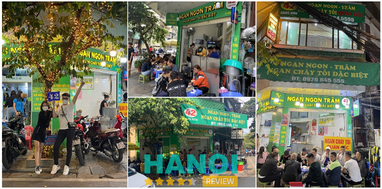
Và nếu phải chọn một món “đỉnh cao” nhất định phải thử ở đây, thì không gì khác ngoài Ngan Cháy Tỏi. Miếng ngan được chiên vàng ruộm, quyện trong hương tỏi phi ngào ngạt – cắn một miếng là bừng vị giác! Lớp da ngan vàng óng, phần thịt bên trong lại mềm, ngọt và thấm đẫm gia vị. Ai mà lỡ ăn một lần là y như rằng “dính bẫy” – chỉ muốn quay lại thêm nữa.
Ngoài ra, menu của quán đúng chuẩn “thiên đường của dân mê ngan”:
- Lòng mề xào – thơm lừng, đậm đà, ăn chơi hay ăn kèm đều hợp.
- Ngan luộc – thịt mềm, ngọt tự nhiên, chấm cùng mắm gừng cay nồng là “chuẩn vị Hà Nội”.
- Bún/miến ngan – lựa chọn nhẹ nhàng mà vẫn đầy đủ hương vị.
- Nộm chân ngan rút xương – giòn sần sật, chua ngọt cân bằng, ăn hoài không ngán.
Đặc biệt, măng cay tặng kèm ở đây là “vũ khí bí mật” – cay nhẹ, chua chua ngọt ngọt, khiến món ngan thêm phần cuốn hút. Từng chi tiết nhỏ đều được chăm chút kỹ, để thực khách không chỉ ăn ngon mà còn cảm nhận được cái tâm và tình yêu ẩm thực của người làm bếp.
Với cả thì vô cùng dễ chịu – chỉ từ 50k đến 500k cho một bữa no nê, tùy bạn gọi món thế nào. Dù là sinh viên, dân văn phòng hay nhóm bạn thân đi nhậu nhẹt cuối tuần, Ngan Ngon Trâm đều có thể chiều lòng tất cả.
Bởi vậy, nếu một chiều lang thang phố cổ, bỗng dưng bạn nghe thấy tiếng bụng réo vì thèm vị ngan thơm nức, hãy ghé 42 Hàng Nón. Biết đâu, bạn cũng sẽ phải thốt lên như bao thực khách khác: “Hà Nội có nhiều quán ngan ngon, nhưng Ngan Ngon Trâm – đúng là có cái ‘duyên’ riêng chẳng lẫn vào đâu được!”
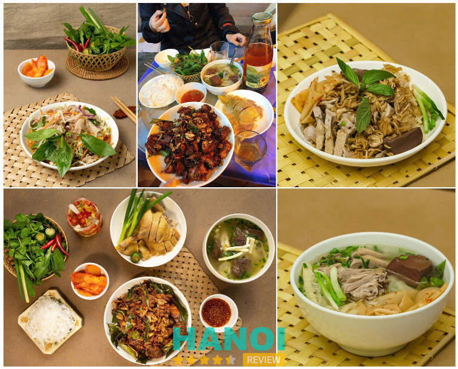
Thông tin liên hệ:
- Địa chỉ: 42 Hàng Nón, Hoàn Kiếm, Hà Nội
- Số điện thoại: 0979 645 555 – 0912 784 242
- Fanpage: Ngan Ngon – Trâm 42 Hàng Nón
- Giờ mở cửa: 9h – 23h00 (Các ngày trong tuần)
Ngan Bền Béo – 65 Phùng Hưng
Hương vị ngan “Chuẩn Phố cổ” khiến thực khách mê mẩn
Nếu bạn là một tín đồ ẩm thực Hà Nội, đặc biệt là các món chế biến từ ngan, chắc chắn bạn đã từng nghe đến cái tên Ngan Bền Béo. Với tuổi đời hơn 30 năm, nằm ngay trên con phố Phùng Hưng tấp nập, quán đã trở thành điểm đến quen thuộc của người dân Thủ đô cũng như du khách muốn khám phá ẩm thực Hà thành đúng điệu.
Quán gây ấn tượng bởi vẻ ngoài bình dị, thân thuộc. Không cầu kỳ trong thiết kế, Ngan Bền Béo vẫn ghi điểm nhờ không gian sạch sẽ, gọn gàng, mang đậm nét quán ăn truyền thống Hà Nội. Giữa sự nhộn nhịp của dòng người qua lại, mùi ngan luộc, ngan cháy tỏi lan tỏa khiến ai đi ngang cũng phải ngoái nhìn.
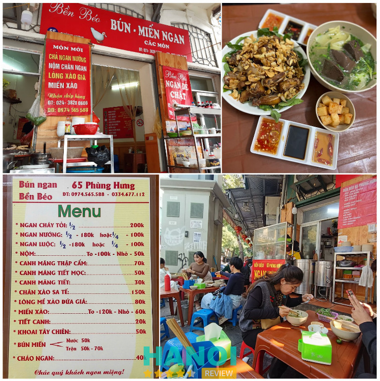
Điều làm nên thương hiệu của quán chính là ngan tươi, chế biến trong ngày, đảm bảo độ ngọt thịt và hương vị nguyên bản. Suốt nhiều thập kỷ, quán vẫn trung thành với cách nấu “chuẩn Phố cổ” – từ nước luộc ngan trong veo, thịt ngan săn chắc cho đến bát nước chấm đặc trưng pha theo công thức gia truyền.
Menu của Ngan Bền Béo được yêu thích bởi sự đa dạng, phù hợp cho cả bữa sáng, trưa hay tối:
- Ngan luộc mềm ngọt, giữ nguyên vị tươi của thịt.
- Chả ngan nướng thơm phức, béo ngậy mà không ngấy.
- Tiết, măng, tiết canh, nộm chân ngan – hương vị đậm đà khó quên.
- Giá xào lòng, miến ngan, bún chấm xì dầu, bún chan, miến trộn – mỗi món là một lựa chọn hấp dẫn riêng.
Đặc biệt, ngan cháy tỏi là “best seller” của quán, nổi tiếng bởi lớp da giòn rụm hòa quyện cùng mùi tỏi phi thơm nức mũi. Nếu thích vị đậm hơn, thực khách có thể thử bún ngan hoặc miến trộn ngan ăn kèm măng cay ngâm, cay nồng nhưng vô cùng cuốn hút.
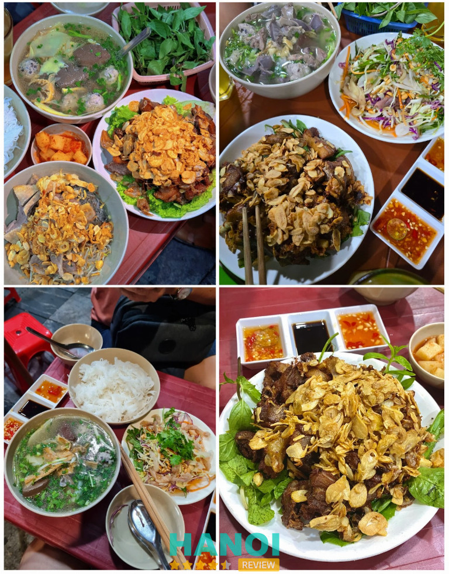
Một điểm thú vị ở quán đó chính là hệ thống bếp mở luôn đỏ lửa, khói nghi ngút, để khách vừa ăn vừa tận mắt thấy các đầu bếp thoăn thoắt chế biến từng phần ngan nóng hổi. Cảm giác được thưởng thức món ăn ngay khi vừa bốc khói, trong không gian thân mật, mang lại trải nghiệm “chuẩn vị phố cổ” mà không nơi nào có được.
Với mức giá dao động từ 50.000 VNĐ (cho một tô bún/miến cơ bản) đến khoảng 150.000 – 200.000 VNĐ (cho suất ngan chặt đầy đủ) bạn đã có một bữa ăn no nê, phù hợp với mọi đối tượng khách hàng.
Nếu bạn đang tìm một quán ăn mang đúng tinh thần Hà Nội – đặc biệt là yêu thích món ngan thì Ngan Bền Béo là lựa chọn đáng thử. Quán không chỉ mang những món ăn ngon về ngan mà còn là một trải nghiệm văn hóa ẩm thực Hà Thành nhộn nhịp. Bạn là khách du lịch hoặc muốn đổi gió cuối tuần, hãy lưu ngay địa chỉ Ngan Bền Béo vào danh sách ẩm thực của mình!
Thông tin liên hệ:
- Địa chỉ: 65 P. Phùng Hưng, Hàng Bồ, Hoàn Kiếm, Hà Nội
- Số điện thoại: 0974 565 588
- Giờ mở cửa: Buổi sáng: 07:00 – 15:00
Buổi chiều: 17:00 – 22:00 (Các ngày trong tuần)
Bún Ngan Dũng Huyền – 71 Hàng Thiếc
Nếu bạn đang tìm một quán ngan Hà Nội vừa ngon vừa giá hợp lý, Bún Ngan Hàng Thiếc Dũng Huyền là lựa chọn lý tưởng. Nằm ngay trung tâm quận Hoàn Kiếm, quán dễ dàng thu hút thực khách nhờ không gian sạch sẽ, phục vụ nhanh chóng và menu hấp dẫn. Đây là địa chỉ quen thuộc của nhiều tín đồ ẩm thực, nổi bật với các món bún ngan Hà Nội thơm ngon, nước dùng đậm đà và thịt ngan tươi, không hôi.
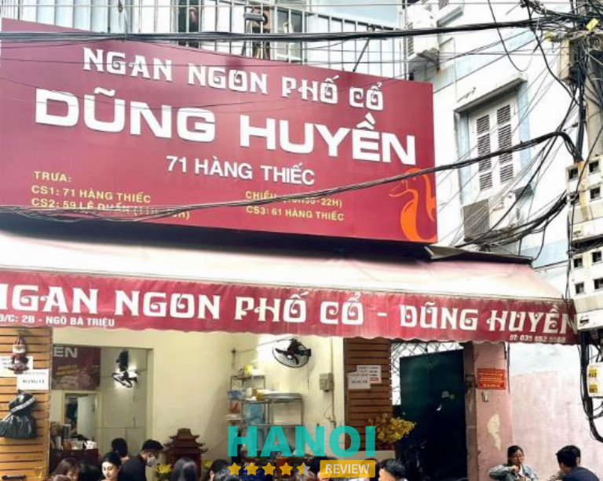
Quán chuyên các món từ ngan, với các nhóm món chính:
- Bún ngan, miến ngan thơm ngon
- Ngan nướng, cháy tỏi dai mềm
- Ngan luộc kết hợp nộm, gan, mề, cật
- Lạc rang, măng chua và nước sốt chua ngọt đậm đà
Nguyên liệu tươi sạch, thịt ngan được chế biến vừa chín tới, giữ vị dai mềm tự nhiên, tạo nên hương vị hài hòa, thơm ngon. Không gian thoáng, phục vụ chu đáo, phù hợp cả ăn trưa và tối cùng bạn bè, gia đình.
Giá tham khảo: 35.000 – 500.000 đồng/món tùy loại. Mức giá này hợp lý với đa số thực khách, từ những người muốn thưởng thức bát bún ngan bình dân đến những nhóm muốn gọi nguyên con hoặc các món đặc biệt. Dù chọn đơn giản hay cao cấp, bạn vẫn được thưởng thức thịt ngan tươi, nước dùng đậm đà và món ăn được chế biến kỹ lưỡng, đảm bảo hương vị chuẩn Hà Nội mà không quá tốn kém.
Với uy tín lâu năm và chất lượng món ăn ổn định, Bún Ngan Hàng Thiếc Dũng Huyền xứng đáng là địa chỉ bạn không nên bỏ qua khi muốn thưởng thức bún ngan Hà Nội. Hãy đến để cảm nhận hương vị đặc trưng và phục vụ tận tâm của quán.
Thông tin liên hệ:
- Địa chỉ: 61 Hàng Thiếc, Hoàn Kiếm, Hà Nội
- Điện thoại: 0358 525 568
- Facebook: fb.com/100062978392577
Quán Ngan Yến – Tây Hồ
Quán Ngan Yến là một trong những quán ngan Hà Nội được nhiều thực khách tìm đến nhờ hương vị đặc sắc, nguyên liệu tươi ngon và phục vụ tận tình. Không gian quán thoáng đãng, ấm cúng, phù hợp cho cả gia đình và bạn bè tụ tập thưởng thức món ăn hấp dẫn.
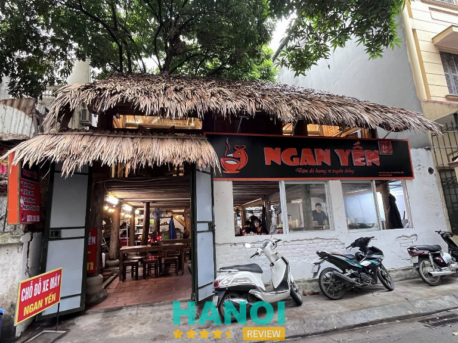
Quán Ngan Yến phục vụ nhiều món từ ngan, từ bún, miến, cơm đến lẩu và ngan quay xông khói. Mỗi món ăn được chế biến tỉ mỉ từ thịt Ngan Dé tươi, kết hợp nguyên liệu chất lượng cao, mang đến hương vị thơm ngon khó quên.
Không gian quán thoáng đãng, sức chứa 150 khách cùng đội ngũ nhân viên chu đáo, nhanh nhẹn, luôn sẵn sàng tư vấn món ăn phù hợp khẩu vị. Quán còn có cơ sở thứ hai tại 61 Ngụy Như Kon Tum, cũng được đánh giá cao về chất lượng và phục vụ tận tâm.
Danh sách sản phẩm/dịch vụ chính:
- Lẩu ngan nấm và lẩu ngan khô, phù hợp khẩu vị thanh đạm hoặc đậm đà.
- Bún ngan, miến ngan, cơm ngan nấu từ thịt tươi, mềm ngọt.
- Ngan quay xông khói độc quyền, thịt thơm, đậm đà tận xương.
- Món ăn kèm: măng nứa Tuyên Quang tươi giòn, gia vị tẩm ướp vừa miệng.
- Nhận đặt tiệc, sinh nhật, giao hàng tận nơi.
Với vị trí thuận tiện, món ăn chuẩn ngon và phục vụ tận tâm, quán ngan Hà Nội – Quán Ngan Yến là lựa chọn hoàn hảo cho bữa ăn gia đình, tụ tập bạn bè hay liên hoan. Hãy đến trải nghiệm ngay để cảm nhận hương vị đặc sắc và dịch vụ chu đáo của quán.
Thông tin liên hệ:
- Địa chỉ: No3T8 Ngoại Giao Đoàn Xuân La, Hà Nội
- Điện thoại: 0983 905 665
- Facebook: fb.com/NganYenNgon
- Giờ mở cửa: 6:00 – 22:00
Bún Ngan Vân Béo – 40 Ngõ 133 Thái Hà
Nếu bạn đang tìm quán ngan Hà Nội chuẩn vị, Bún Ngan Vân Béo là điểm đến lý tưởng. Món ăn tại đây thơm ngon, hấp dẫn, từ bún đến ngan quay xông khói. Không gian thoáng đãng và dịch vụ chu đáo giúp bữa ăn thêm trọn vẹn.
Nằm ngay tại ngõ 133 Thái Hà, quán sở hữu không gian sạch sẽ, thoáng mát, cùng khu vực để xe thuận tiện, mang lại cảm giác thoải mái cho thực khách. Với phong cách phục vụ nhanh chóng, thân thiện và vui vẻ, Bún Ngan Vân Béo đã tạo dựng được niềm tin với đông đảo khách hàng lâu năm.
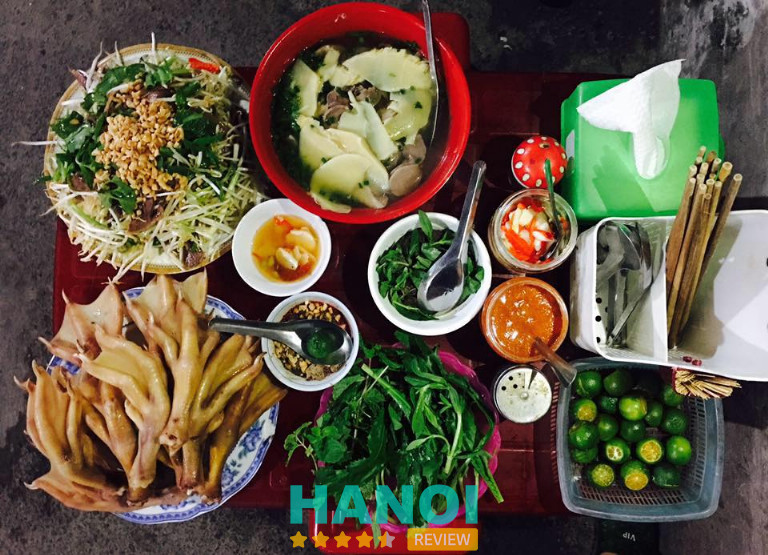
Quán Bún Ngan Vân Béo nổi bật nhờ sự kết hợp giữa chất lượng món ăn và giá cả hợp lý. Một tô bún ngan chỉ từ 30.000 đồng nhưng đầy ắp nguyên liệu, phục vụ đầy đủ vị chua, cay, mặn, ngọt hài hòa. Thực khách thường xuyên xếp hàng để thưởng thức bữa ăn tại đây, minh chứng cho sự yêu thích và uy tín của quán. Đây chính là địa chỉ bún ngan Hà Nội đáng tin cậy, phù hợp với cả nhóm bạn và gia đình.
Thực đơn nổi bật:
- Ngan Cháy Tỏi: 280.000 đồng
- Bún Ngan Nước: 65.000 đồng
- Bún Ngan Trộn: 65.000 đồng
- Nộm Chân Tiến Vua: 160.000 đồng
- Miến Ngan Trộn: 65.000 đồng
- Miến Ngan Nước: 65.000 đồng
Bún Ngan Vân Béo không chỉ mang đến món bún ngan chuẩn vị, mà còn khẳng định uy tín lâu năm tại Hà Nội. Hãy đến và trải nghiệm ngay hôm nay để cảm nhận trọn vẹn hương vị bún ngan Hà Nội đúng chất.
Thông tin liên hệ:
- Địa chỉ: 40 Ngõ 133 Thái Hà, Q. Đống Đa, Hà Nội
- Điện thoại: 0915 821 199
- Facebook: fb.com/vannganthaiha
- Giờ mở cửa: 15:00 – 23:00
Khoa Ngan Xưa Và Nay – 77 Hai Bà Trưng
Khoa Ngan Xưa Và Nay là một trong những quán ngan Hà Nội chất lượng cao, luôn sử dụng nguyên liệu tươi sạch. Mỗi món ăn đều được chế biến tỉ mỉ, giữ trọn hương vị đậm đà. Thực khách đến đây đều khen ngợi về độ thơm ngon và dinh dưỡng.
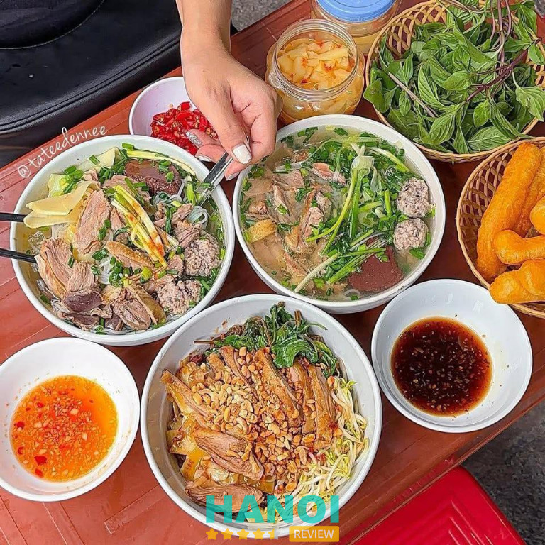
Quán chú trọng nguyên liệu tươi sạch, chất lượng đảm bảo vệ sinh, chế biến đa dạng các món ngon từ ngan như ngan quay, miến trộn ngan, dồi ngan chiên, nem ngan hay bún ngan Hà Nội. Không gian quán đơn giản, mộc mạc nhưng vẫn bắt mắt, tạo cảm giác gần gũi. Đội ngũ nhân viên nhiệt tình, thân thiện luôn sẵn sàng phục vụ và tư vấn món ăn phù hợp cho khách.
Một số món tiêu biểu tại quán (giá tham khảo):
- Ngan Quay: Thịt ngan vàng ươm, giòn ngoài, mềm trong.
- Ngan Nướng: Hương vị đậm đà, thơm lừng, ăn kèm nước chấm đặc trưng.
- Ngan Luộc: Thịt ngan tươi, mềm, giữ trọn vị ngọt tự nhiên.
- Miến Trộn Ngan: Sợi miến dai, thịt ngan thơm ngon, rau sống tươi mát.
- Bún Ngan: Nước dùng đậm đà, thịt ngan săn chắc, thêm tiết nếu muốn.
- Dồi Ngan Chiên & Nem Ngan: Giòn rụm, hương vị hấp dẫn, ăn là nhớ mãi.
Với chất lượng món ăn luôn được đảm bảo, không gian thân thiện và đội ngũ phục vụ chuyên nghiệp, Khoa Ngan Xưa Và Nay là lựa chọn hoàn hảo cho những ai yêu thích món ăn từ ngan tại Hà Nội. Hãy đến thưởng thức ngay hôm nay và cảm nhận hương vị đặc trưng của ẩm thực Hà Thành.
Thông tin liên hệ:
- Địa chỉ: 77 Hai Bà Trưng, Q. Hoàn Kiếm, Hà Nội
- Điện thoại: 0944 278 866
- khoanganxuavanay@gmail.com
- Facebook: fb.com/khoanganxuanay
- Giờ mở cửa: 08:00 – 22:00
Quán Ngan Lan Béo – 42 Nguyễn Công Trứ
Nếu bạn đang tìm một quán ngan Hà Nội ngon, uy tín, thì Quán Ngan Lan Béo là địa chỉ không thể bỏ qua. Nằm ngay trung tâm quận Hai Bà Trưng, quán nổi tiếng nhờ kinh nghiệm lâu năm trong chế biến các món bún, miến và cháo ngan. Quán thu hút thực khách nhờ thịt ngan tươi ngon, nước dùng thanh ngọt và không gian sạch sẽ, thoải mái. Đây là lựa chọn hoàn hảo cho những ai muốn thưởng thức món bún miến ngan Hà Nội chuẩn vị với mức giá hợp lý.
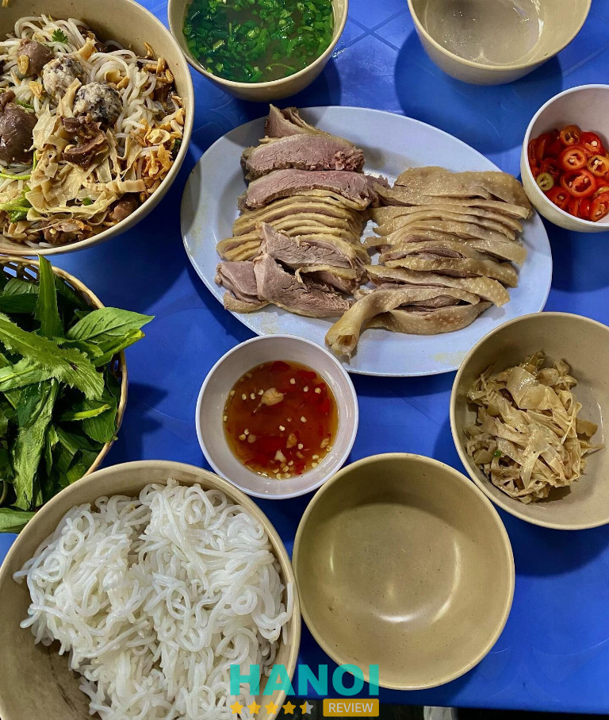
Quán Ngan Lan Béo nổi bật với đội ngũ phục vụ nhanh nhẹn, thân thiện và nhiệt tình. Cô chủ quán dễ mến, luôn tạo cảm giác gần gũi cho thực khách. Sự sáng tạo trong cách chế biến và kết hợp nguyên liệu khiến mỗi bát bún, miến hay cháo ngan đều có hương vị độc đáo, đầy đủ dinh dưỡng. Quán cung cấp đa dạng món ăn kèm, giúp thực khách dễ dàng lựa chọn theo sở thích.
Các món nổi bật:
- Bún ngan Hà Nội chuẩn vị
- Miến ngan thơm ngon
- Cháo ngan nóng hổi, mềm ngon
- Bún trộn ngan chua ngọt hấp dẫn
- Các món ăn kèm: thịt ngan xé, mọc, măng
Sự uy tín lâu năm và chất lượng món ăn ổn định là điểm cộng lớn. Quán không chỉ phục vụ ngon miệng mà còn mang lại trải nghiệm ẩm thực thú vị với các nguyên liệu tươi sạch, chế biến tinh tế. Nếu bạn muốn tìm quán ngan Hà Nội đáng tin cậy, Quán Ngan Lan Béo chắc chắn sẽ làm bạn hài lòng.
Thông tin liên hệ:
- Địa chỉ: 42 Nguyễn Công Trứ, Hai Bà Trưng, Hà Nội
- Điện thoại: 0988 364 781
- Giờ mở cửa: 06:00 – 14:00
- Giá tham khảo: 30.000 – 50.000 đồng
THAM KHẢO: 10 Quán cafe Acoustic tại Hà Nội nhạc cực chill, view siêu đẹp
Bún Ngan Chặt – 115E Phùng Hưng
Bún Ngan Chặt là quán bún ngan Hà Nội được nhiều thực khách yêu thích nhờ hương vị thơm ngon và kinh nghiệm lâu năm trong chế biến các món ngan. Nằm ngay trung tâm quận Hoàn Kiếm, quán không chỉ nổi bật nhờ chất lượng món ăn mà còn nhờ không gian giản dị, phục vụ thân thiện và nhanh chóng. Đây là địa chỉ uy tín cho những ai muốn thưởng thức bún ngan truyền thống giữa thủ đô.
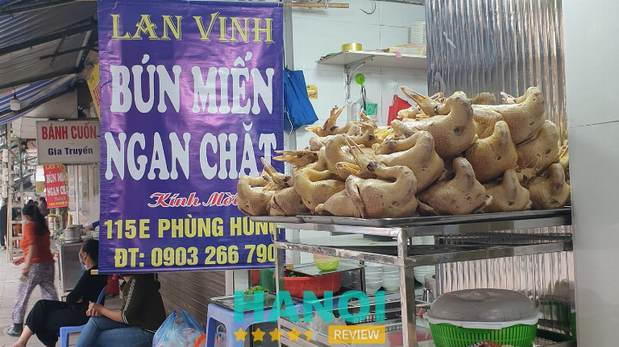
Quán chuyên các món bún và miến ngan với phần thịt đầy đặn, mềm và thơm, đặc biệt là cổ ngan hầm nhừ béo ngậy. Ngoài ra, quán còn phục vụ các món trộn và các món phụ đi kèm, tạo sự đa dạng cho thực khách. Mặc dù không gian quán nhỏ, Bún Ngan Chặt vẫn luôn sạch sẽ và tiện lợi, phù hợp với cả khách đến ăn tại chỗ hoặc mua mang về.
Thực đơn đa dạng:
- Bún ngan, miến ngan, bún khô, bún trộn
- Ngan chặt, cổ cánh hầm nhừ, các món phụ như mề, tim, gan
- Các món trộn và canh măng
Giá các món tại quán dao động khoảng 30.000 đồng – 66.000 đồng, mang đến trải nghiệm ẩm thực truyền thống chất lượng mà vẫn hợp túi tiền cho đa số thực khách.
Bún Ngan Chặt thực sự là địa điểm đáng tin cậy để thưởng thức bún ngan Hà Nội. Với kinh nghiệm lâu năm, đội ngũ phục vụ nhiệt tình và thực đơn đa dạng, quán luôn là lựa chọn ưu tiên của những ai yêu thích ẩm thực truyền thống, giản dị nhưng đầy hương vị.
Thông tin liên hệ:
- Địa chỉ: 115E Phùng Hưng, Q. Hoàn Kiếm, Hà Nội
- Điện thoại: 0123 633 6346
- Facebook: fb.com/100063706052791
Ngan Phố – 60 Duy Tân
Ngan Phố là một quán ngan Hà Nội nổi tiếng tại khu Cầu Giấy, thu hút đông đảo thực khách, đặc biệt là giới văn phòng. Dù không nằm ở trung tâm, quán vẫn tạo được uy tín nhờ chất lượng món ăn và không gian sạch sẽ, gọn gàng. Đây là điểm đến lý tưởng cho những ai muốn thưởng thức bún miến ngan trọn vẹn, hoặc các món mẹt ngan đủ loại.
Với thực đơn đa dạng từ các món ăn chơi đến ăn chính, Ngan Phố đáp ứng nhu cầu ăn trưa, ăn tối hay tụ tập bạn bè. Không gian quán vỉa hè đơn giản nhưng thoáng mát, chủ quán vui vẻ, nhiệt tình, tạo cảm giác thoải mái cho khách hàng.
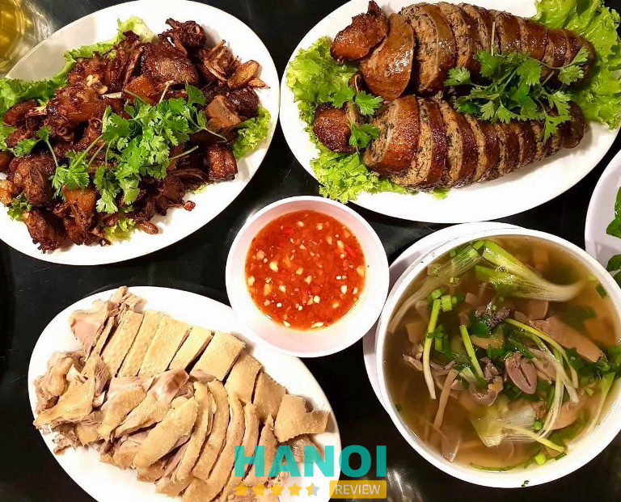
Quán Ngan Phố đặc trưng với nước dùng trong vắt, thơm ngon và vị ngọt thanh, thịt ngan thái miếng dày vừa phải, măng thái mỏng, tiết mướt mịn. Các món ăn đều được chuẩn bị tươi mới, đảm bảo hương vị trọn vẹn. Nhờ sự chăm chút trong từng bát bún hay mẹt ngan, quán luôn giữ được uy tín trong lòng thực khách.
Các nhóm món nổi bật tại quán:
- Bún ngan nước, bún ngan trộn
- Miến ngan nước, miến ngan trộn
- Ngan cháy tỏi, đùi ngan
- Canh măng tiết
Giá tham khảo cho các món tại Ngan Phố dao động từ 70.000 – 400.000 đồng/món, phù hợp với nhiều nhu cầu từ ăn nhanh trưa đến những bữa tiệc nhỏ cùng bạn bè.
Với chất lượng món ăn thơm ngon, không gian gọn gàng và đội ngũ phục vụ nhiệt tình, Ngan Phố là quán ngan Hà Nội đáng thử. Đây là lựa chọn lý tưởng cho những ai đang tìm một địa điểm thưởng thức món ngon chuẩn vị, giá cả hợp lý tại quận Cầu Giấy, Hà Nội.
Thông tin liên hệ:
- Địa chỉ: 60 Duy Tân, quận Cầu Giấy
- Điện thoại: 0949 226 060
- Facebook: fb.com/nganpho60
Bún Miến Ngan Minh Thu – 31 Lý Quốc Sư
Nằm ngay trung tâm quận Hoàn Kiếm, Bún Miến Ngan Minh Thu là một trong những quán bún ngan Hà Nội được nhiều thực khách yêu thích. Quán nổi bật với không gian thoáng đãng, sạch sẽ cùng đội ngũ phục vụ nhiệt tình, mang đến trải nghiệm ăn uống thoải mái và trọn vẹn. Nhờ bí quyết chế biến riêng và lựa chọn nguyên liệu tươi ngon, mỗi tô bún hay miến ngan tại đây đều đậm đà, thơm ngon và đầy đặn, tạo nên hương vị đặc trưng khó quên cho bất kỳ ai thưởng thức.
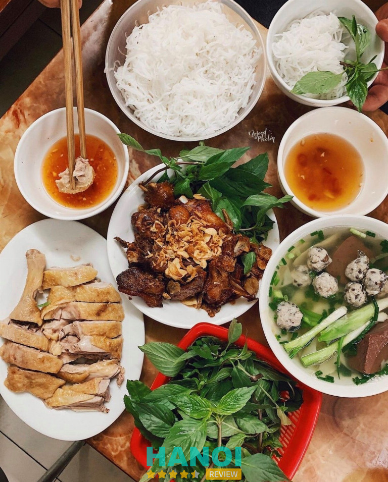
Quán Minh Thu không chỉ nổi bật nhờ nước dùng thơm ngon và miến cùng thịt ngan đầy đặn, mà còn có nhiều món ăn đặc trưng thu hút khách:
- Ngan cháy tỏi: Ngan tẩm ướp vừa miệng, chấm cùng nước sốt xì dầu, kết hợp vị cay nhẹ của tỏi cháy tạo nên hương vị độc đáo.
- Bún ngan: Tô bún chất lượng với nước dùng ngọt thanh, thịt ngan mềm, miến dai vừa đủ.
- Miến ngan: Miến mềm, thấm đều nước dùng đậm đà, kết hợp với thịt ngan thơm ngon.
Ngoài ra, đội ngũ nhân viên tại quán rất thân thiện, phục vụ nhanh chóng và nhiệt tình, góp phần mang lại trải nghiệm ăn uống thoải mái cho thực khách. Giá cả hợp lý, dao động từ 30.000 – 60.000 đồng mỗi món, phù hợp với nhiều đối tượng khách hàng.
Thực đơn đa dạng và hấp dẫn:
- Bún ngan Hà Nội
- Miến ngan thơm ngon
- Ngan cháy tỏi đặc sắc
- Các món ngan chế biến theo công thức riêng
Với uy tín lâu năm và chất lượng món ăn được nhiều người tin tưởng, Bún Miến Ngan Minh Thu là lựa chọn hoàn hảo cho những ai muốn thưởng thức bún ngan Hà Nội chuẩn vị. Hãy đến trải nghiệm ngay hôm nay để cảm nhận hương vị đậm đà và dịch vụ tận tình.
Thông tin liên hệ:
- Địa chỉ: 31 Lý Quốc Sư, Hoàn Kiếm, Hà Nội
- Điện thoại: 0912 623 559
- Facebook: fb.com/100035615572162
THAM KHẢO: 7 Quán vịt om sấu ở Hà Nội nổi tiếng, hương vị thơm ngon khó quên
Bún Ngan Nhàn – 14 Ngõ Trung Yên
Bún Ngan Nhàn là một trong những quán bún ngan Hà Nội được nhiều thực khách yêu thích, đặc biệt nổi bật với hương vị đậm đà và chất lượng phục vụ chuyên nghiệp. Nằm ngay trung tâm quận Hoàn Kiếm, quán dễ tìm, không gian sạch sẽ và thoáng mát, tạo cảm giác thoải mái cho khách khi thưởng thức.
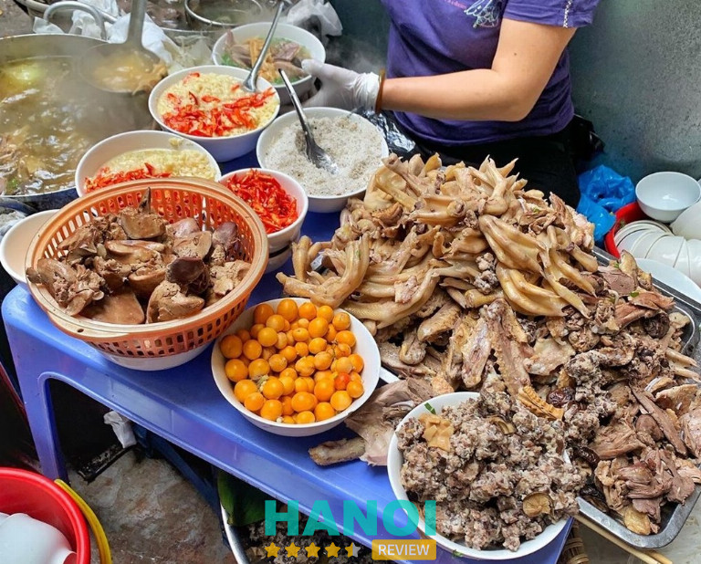
Với uy tín lâu năm và tâm huyết của chủ quán, Bún Ngan Nhàn mang đến cho thực khách những tô bún ngan chuẩn Hà Nội, thơm ngon và chất lượng. Đây chắc chắn là địa chỉ đáng tin cậy cho những ai đang tìm quán bún ngan Hà Nội ngon, chất lượng.
Bún Ngan Nhàn nổi tiếng nhờ thịt ngan mềm, ngọt tự nhiên và nước dùng ninh từ xương ngan thanh dịu, giữ trọn hương vị nguyên chất. Quán chú trọng từng chi tiết: từ việc nặn viên mọc vừa ăn, thịt thơm và sần sật nhờ mộc nhĩ, đến topping phong phú như măng khô, măng tươi, măng chua và thịt ngan xé. Mỗi tô bún đều đầy ắp nguyên liệu, tạo nên bữa ăn vừa ngon miệng vừa bắt mắt.
Các món nổi bật tại Bún Ngan Nhàn:
- Bún ngan truyền thống
- Bún mọc ngan
- Bún măng khô ngan
- Bún ngan xé thịt
- Các món ăn kèm theo như măng chua, mọc
Bún Ngan Nhàn không chỉ là điểm đến cho những tín đồ bún ngan Hà Nội, mà còn là nơi trải nghiệm văn hóa ẩm thực độc đáo với nước dùng ngọt thanh và thịt ngan chất lượng. Nếu bạn đang tìm quán bún ngan Hà Nội uy tín, chất lượng và giá cả hợp lý, Bún Ngan Nhàn chính là lựa chọn hoàn hảo.
Thông tin liên hệ:
- Địa chỉ: 14 Ngõ Trung Yên, Đinh Liệt, Hoàn Kiếm, Hà Nội
- Điện thoại: 0373 373 088
- Facebook: fb.com/100075697853120
- Giờ mở cửa: 06:30 – 13:30
- Giá: 30.000 – 50.000 đồng
Bún Ngan Long Dung – 23 Nguyễn Du
Bún Ngan Long Dung là một trong những quán ngan ở Hà Nội được nhiều thực khách yêu thích nhờ hương vị đặc trưng và không gian thoải mái. Nằm ngay tại trung tâm quận Hai Bà Trưng, quán dễ tìm và thuận tiện cho mọi lứa tuổi ghé thăm. Với đội ngũ nhân viên thân thiện, phục vụ nhanh nhẹn và thực đơn đa dạng, Bún Ngan Long Dung mang đến trải nghiệm ẩm thực trọn vẹn cho những ai yêu thích các món từ ngan.
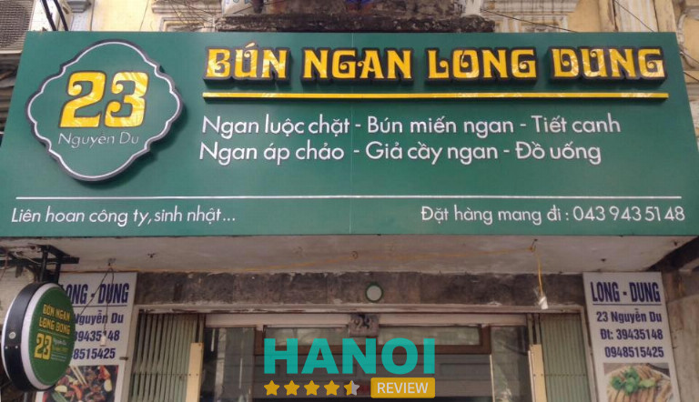
Tại đây, bún ngan Hà Nội được chế biến với thịt ngan tươi ngon, mềm nhưng vẫn chắc, kết hợp cùng rau húng, lạc rang và hành phi thơm lừng. Nước chấm nhỏ xinh, chua cay hài hòa, tôn thêm vị ngon cho mỗi bát bún.
Ngoài bún, món ngan cháy tỏi tại quán cũng rất được yêu thích, thịt ngan được chiên giòn, sốt đậm đà và ngọt nhẹ, tạo nên hương vị khó quên. Những ngày tiết trời se lạnh, bát canh măng tiết nóng hổi với nước dùng trong và hành lá sẽ làm ấm lòng mọi thực khách.
Các món nổi bật tại Bún Ngan Long Dung:
- Bún ngan trộn
- Miến ngan
- Ngan chặt
- Nộm ngan
- Canh măng tiết
- Ngan cháy tỏi
Quán không chỉ nổi tiếng nhờ chất lượng món ăn mà còn nhờ sự chăm chút trong từng bát bún, đảm bảo nguyên liệu tươi sạch và hương vị chuẩn vị Hà Nội. Giá cả hợp lý, chỉ từ 20.000 – 50.000 đồng/món, phù hợp với mọi đối tượng. Đây chắc chắn là địa chỉ mà những tín đồ ẩm thực tìm kiếm quán ngan ở Hà Nội không thể bỏ qua.
Thông tin liên hệ:
- Địa chỉ: 23 Nguyễn Du, Hai Bà Trưng, Hà Nội
- Điện thoại: 0948 515 425
- phihai91@gmail.com
- Facebook: fb.com/bunngan23
Bún Ngan Hàng Cân – 16 Hàng Cân
Nếu bạn đang tìm một quán ngan ở Hà Nội vừa ngon vừa dễ tìm, Bún Ngan Hàng Cân là điểm dừng chân lý tưởng. Quán nổi bật nhờ không gian giản dị, sạch sẽ và thân thiện, tạo cảm giác thoải mái cho thực khách. Những sợi bún nhỏ mềm mịn, thịt ngan chắc và măng ninh kỹ hòa cùng nước dùng đậm đà mang đến trải nghiệm bún ngan chuẩn vị Hà Nội. Nước chấm riêng biệt càng làm tăng hương vị cho từng miếng thịt, khiến món bún thêm phần hấp dẫn.
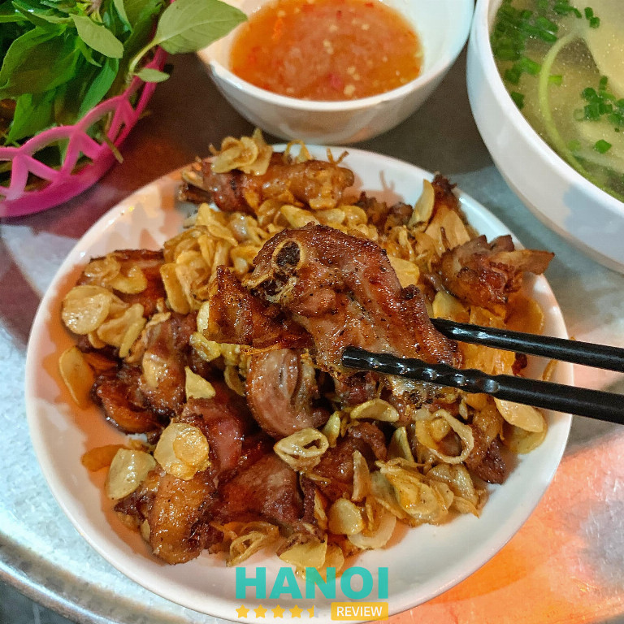
Quán được đánh giá cao nhờ chất lượng nguyên liệu tươi ngon và cách chế biến hợp lý. Không gian quán mộc mạc, gần gũi, phục vụ nhanh nhẹn giúp thực khách cảm thấy thoải mái khi thưởng thức bữa ăn.
Một số món nổi bật:
- Canh măng tiết
- Bún chan thịt
- Miến trộn thịt
- Cánh ngan
- Ngan cháy tỏi
- Góc đùi luộc hoặc cháy tỏi kèm bún canh
Giá tham khảo cho các món tại Bún Ngan Hàng Cân dao động từ 25.000 – 50.000 đồng mỗi phần. Đây là mức giá hợp lý, phù hợp với đa số thực khách khi muốn thưởng thức bún ngan chuẩn vị Hà Nội.
Bún Ngan Hàng Cân là lựa chọn lý tưởng cho những ai muốn thưởng thức bún ngan tại quán ngon ở Hà Nội. Chất lượng món ăn, giá cả hợp lý cùng không gian thân thiện chắc chắn sẽ làm bạn hài lòng.
Thông tin liên hệ:
- Địa chỉ: 16 Hàng Cân, Hoàn Kiếm, Hà Nội
- Giờ mở cửa: 18:00 – 23:00
Tiêu chí chọn quán ngan ngon, chất lượng ở Hà Nội
Để chọn được quán ngan ở Hà Nội ngon, bạn cần xem xét nhiều yếu tố từ chất lượng món ăn, phục vụ cho đến không gian và giá cả hợp lý.
- Chất lượng thịt ngan: Thịt ngan tươi, mềm và được chế biến đúng cách, đảm bảo hương vị thơm ngon và đậm đà.
- Hương vị đặc trưng: Quán có các món ngan mang phong cách riêng, giữ được vị truyền thống hay sáng tạo hợp khẩu vị.
- Không gian quán: Quán sạch sẽ, thoáng mát và tiện nghi, tạo cảm giác thoải mái khi thưởng thức bữa ăn.
- Dịch vụ phục vụ: Nhân viên thân thiện, nhanh nhẹn, tư vấn món ăn hợp lý giúp khách hàng hài lòng tối đa.
- Giá cả hợp lý: Mức giá phù hợp với chất lượng món ăn, không quá đắt nhưng vẫn đảm bảo nguyên liệu tươi ngon.
- Độ nổi tiếng và đánh giá: Quán được nhiều thực khách đánh giá cao, có lượt khách ổn định và uy tín lâu năm.
- Vị trí thuận tiện: Dễ tìm, gần trung tâm hoặc các khu dân cư, thuận tiện di chuyển và đỗ xe cho khách.
Khám phá các quán ngan ở Hà Nội giúp bạn trải nghiệm món ăn hấp dẫn, chuẩn vị và phục vụ tận tâm. Với hương vị thơm ngon, không gian thoải mái cùng giá cả hợp lý, mỗi địa điểm mang đến trải nghiệm ẩm thực riêng. Hãy đến thử và cảm nhận ngay hôm nay, chắc chắn bạn sẽ tìm thấy quán yêu thích cho những bữa ăn ngon trọn vẹn bên gia đình và bạn bè.
Có thể bạn quan tâm
- 11 Nhà hàng Ấn Độ ở Hà Nội mang hương vị chuẩn, giá cả hợp lý
- 10 Quán phở gà tại Hà Nội ngon nức tiếng, khách đông nườm nượp
- 10 Cửa hàng bánh cốm ở Hà Nội ngon chuẩn vị, quà biếu ý nghĩa
- 10 Quán cafe có Piano ở Hà Nội mang lại trải nghiệm âm nhạc tuyệt vời
DOANH NGHIỆP: Đăng tải thông tin MIỄN PHÍ.
Tin đọc nhiều


10 Quán bán món ngon ở chợ Đồng Xuân giá rẻ, hấp dẫn
Nếu bạn đang tìm kiếm những hương vị ẩm thực truyền thống đặc trưng Hà Nội thì không thể bỏ qua các món ngon ở...

13 Quán cà phê bánh ở Hà Nội nổi bật, trải nghiệm ngon khó quên
Hà Nội không chỉ nổi tiếng với cà phê trứng, cà phê sữa đá mà còn là thiên đường của các quán cà phê bánh....

10 Món ngon vỉa hè ở Hà Nội hấp dẫn, giá cả bình dân
Nhắc đến món ngon vỉa hè ở Hà Nội, người ta sẽ nghĩ ngay đến những hương vị dân dã, quen thuộc nhưng đầy cuốn...

5 Quán chả rươi ở Hà Nội ngon nổi tiếng, giá hợp lý
Thưởng thức đặc sản mùa thu đông không thể bỏ qua những quán chả rươi ở Hà Nội với hương vị đậm đà, thơm ngon...

Trở thành người đầu tiên bình luận cho bài viết này!